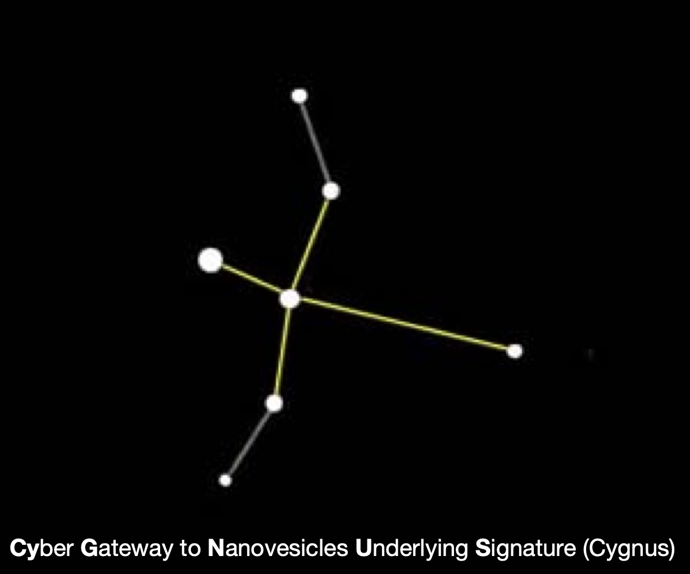

Cygnus Version 0.1.0
Single EV Imaging Data Analysis and Visualization Pipeline
Cygnus offers customizable and interactive workflow for single EV analysis with multiplexing (SEAM)
Quick Installation of Cygnus
First, install devtools (for installing GitHub packages) if it isn’t already installed:
if (!requireNamespace("devtools", quietly = TRUE)) install.packages("devtools")Then, install BiocManager (for installing bioconductor packages) if it isn’t already installed:
if (!requireNamespace("BiocManager", quietly = TRUE)) install.packages("BiocManager")Then, install Cygnus:
devtools::install_github("yeinchung/Cygnus", ref="master", repos = BiocManager::repositories())Issues using Cygnus?
Cygnus is currently in beta. If you think you have found a bug, please first install the latest version of Cygnus via
devtools::install_github("yeinchung/Cygnus", ref="master", repos = BiocManager::repositories())If this does not fix your problem, please report an issue on Github with the Bug Report form.